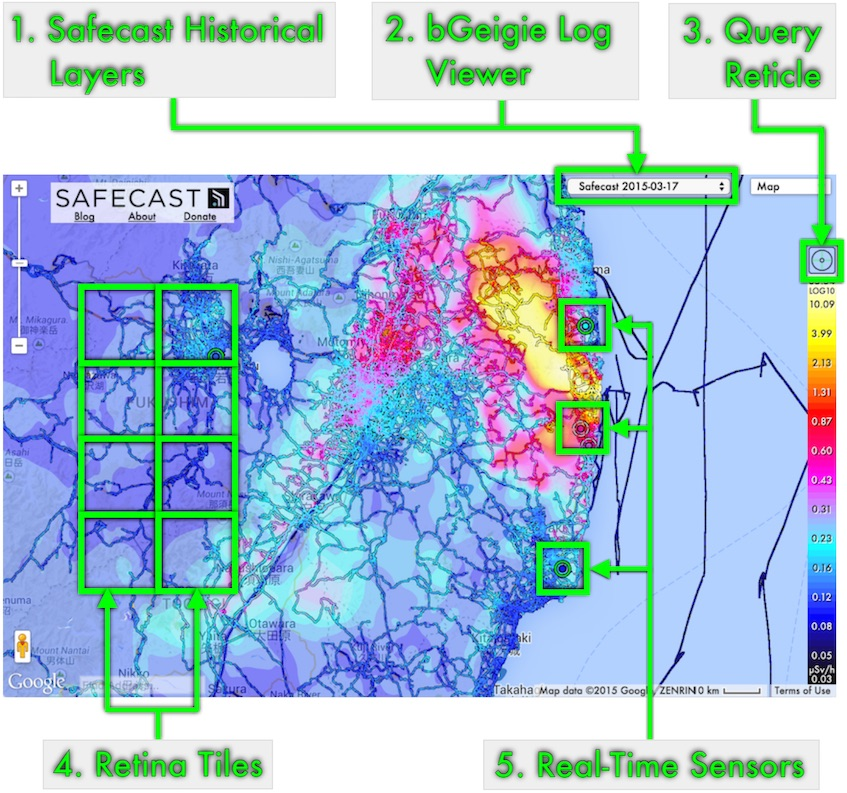

<span>
    <div>
        <table style="width:424px;border:0px;padding:0px;border-spacing:0px;border-collapse:collapse;" class="FuturaFont">
            <tr>
                <td colspan="2" style="padding: 0px 0px 0px 0px; text-align:center;">
                    <div style="font-size:120%; left:0; right:0;" class="sc_hline">What's New</div>
                </td>
            </tr>
            <tr>
                <td colspan="2" style="padding: 0px 0px 7px 0px; text-align:center;">
                    <div style="font-size:80%; left:0; right:0;">2015-04-03</div>
                </td>
            </tr>
        </table>
        <div id="wn_btnDoneX" onclick="SafemapPopupHelper.WhatsNewClose();" style="position:absolute;top:5px;right:10px;cursor:pointer;cursor:hand;">
            
        </div>
        <div id="wn_btnLangEn" title="View in English" onclick="SafemapPopupHelper.WhatsNewShow('en');" style="position:absolute;top:5px;left:10px;cursor:pointer;cursor:hand;">
            
        </div>
        <div id="wn_btnLangJa" title="日本語で表示" onclick="SafemapPopupHelper.WhatsNewShow('ja');" style="position:absolute;top:5px;left:45px;cursor:pointer;cursor:hand;">
            
        </div>
    </div>
    <br/>
    
    <br/>
    <div class="FuturaFont">
    <ol>
        <li>Safecast Historical Layers
            <ul>
                <li>For 2013 and 2014</li>
                <li>Compare changes over time</li>
                <li>See the growth of the Safecast dataset</li>
            </ul>
        </li>
        <li>bGeigie Log Viewer
            <ul>
                <li>Large, custom views of the Safecast dataset</li>
                <li>Completely rewritten for scalability and performance</li>
                <li>Search by user, text, or date</li>
                <li>View every log in the Safecast database at the same time (Desktop)</li>
                <li>Customizable symbology</li>
                <li>Street View support</li>
            </ul>
        </li>
        <li>Query Reticle
            <ul>
                <li>View the numeric value for any tile layer</li>
                <li>No more guesswork comparing to the scale</li>
                <li>Indication of precision of color lookup</li>
                <li>Continuous 60 FPS display</li>
            </ul>
        </li>
        <li>Retina Tiles
            <ul>
                <li>Requires HDPI or Retina display</li>
                <li>Higher resolution tiles for the main Safecast and interpolation layers</li>
                <li>See more detail without zooming in</li>
            </ul>
        </li>
        <li>Real-Time Sensors
            <ul>
                <li>Dynamic icons show dose rate and sensor status at a glance</li>
                <li>Dynamic scaling to prevent obscuring the map</li>
                <li>Improved graphs and link to sensor details</li>
            </ul>
        </li>
    </ol>
    <div style="background:#EFEFEF;border:1px solid #DFDFDF;padding:10px 10px 0px 10px;">
    This window will only display once.
    <br/><br/>
    To view it again:
    <ol>
        <li>Click "About"</li>
        <li>Scroll to the bottom</li>
        <li>Click "What's New"</li>
    </ol>
    </div>
    </div>
</span>